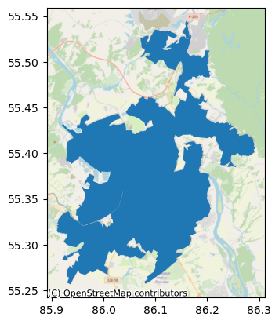
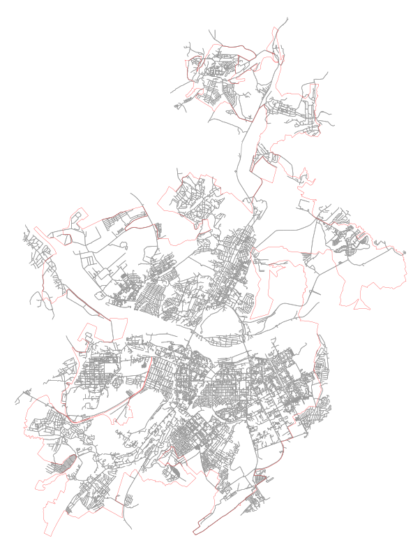
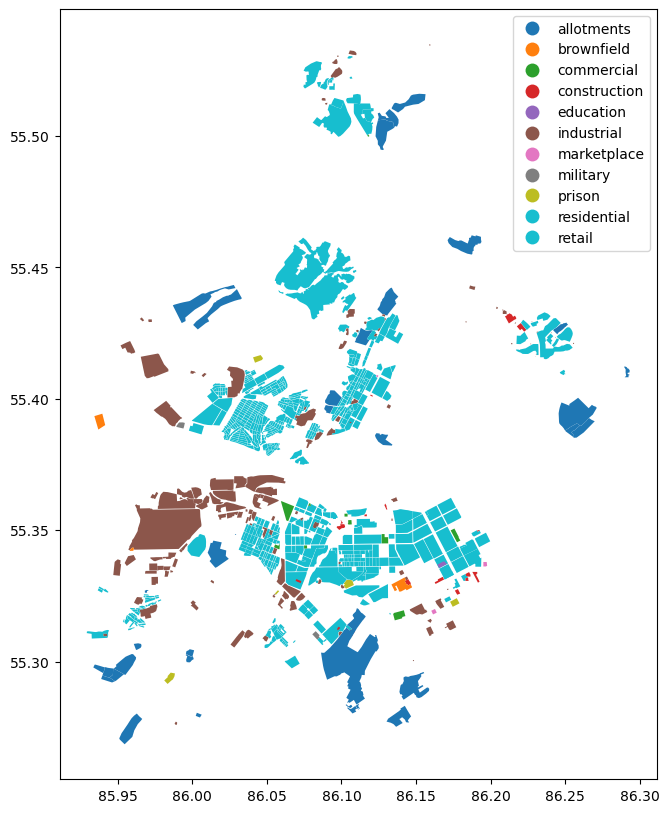
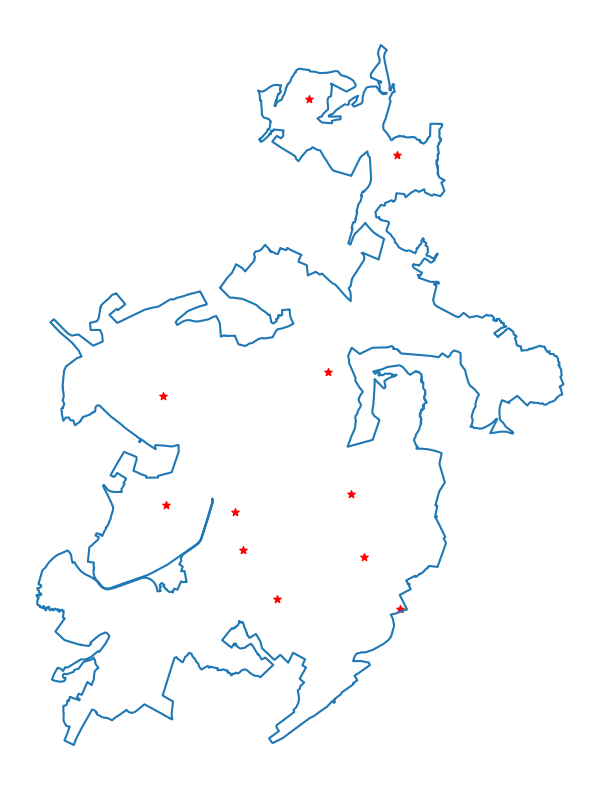

import osmnx as oximport pandas as pdimport geopandas as gpdimport contextily as ctximport matplotlib.pyplot as plt# Версии библиотекprint('OSMnx:', ox.__version__,'\nGeoPandas:', gpd.__version__,'\nPandas:', pd.__version__,'\nContextily', ctx.__version__, )
Название городов рекомендуется указывать в формате
город, субъект, страна
# Получение данных по названию населенного пунктаcity_name ='Кемерово, Кемеровская область, Россия'borders = ox.geocode_to_gdf(city_name)# Сохранение в файл `GeoPackage` borders.to_file('data/kemerovo/borders.gpkg', driver ='GPKG')# Просмотр картыax = borders.plot()ctx.add_basemap(ax, source=ctx.providers.OpenStreetMap.Mapnik, crs=borders.crs)plt.show()

5.3 Граф улично-дорожной сети
Загрузка ГДС (в пределах полигона границ с буферной зоной)
Название городов рекомендуется указывать в формате
город, субъект, страна
# Разрешаем выгружать данные частных дорогox.settings.default_access =''# Размер буферной зоны в метрахbuffer_size =1000# Получение полигона с буферной зонойborders_buffer = ox.projection.project_gdf(borders).copy()borders_buffer = borders_buffer.buffer(buffer_size)borders_buffer = ox.projection.project_gdf(borders_buffer, to_latlong=True)# Загрузка ГДСG = ox.graph_from_polygon(borders_buffer.union_all(), network_type ='drive_service', simplify =False, retain_all =False, )# Печать количества вершин и ребер ГДСprint('Количество вершин:', len(G.nodes()))print('Количество ребер:', len(G.edges()))# Печать ГДСax = borders.boundary.plot(color='r', linewidth=0.2, figsize=(10,10))ox.plot_graph(G, node_size=0, edge_linewidth=0.5, bgcolor='white', ax=ax)ax.set_axis_off()
Количество вершин: 54948
Количество ребер: 113538

Буферная зона требуется для последующего корректного расчета параметров прибытия подразделений пожарной охраны. В данном случае, загрузка ГДС без буферной зоны приведет к тому, что северная часть города будет недоступна. Размер буферной зоны определяется исходя из особенностей конкретного населенного пункта, но опыт показывает, что он должен составлять не менее 1 000 м.
Обратим внимание на аргументы функции ox.graph_from_polygon:
network_type - Определяет тип выгружаемых дорог. Может принимать "all", "all_public", "bike", "drive", "drive_service", "walk", однако для целей расчета параметров прибытия подразделений пожарной охраны приемлемым является только "drive_service".
simplify - требуется ли упрощать граф. В ходе упрощения из ГДС удаляется ряд узлов не играющих роли в расчетах. Это существенно уменьшает его размер и ускоряет расчеты. Однако, делает расчет времени следования по ребрам ГДС менее точным. Поэтому рекомендуется после выгрузки ГДС сначала производить установку скоростей и времен следования и только затем упрощать ГДС.
retain_all - требуется ли включать в ГДС несвязные компоненты. В отдельных случаях может потребоваться учет районов населенного пункта не соединенных между собой. В таких случаях данных аргумент должен быть установлен в значение True. По ситуации.
Загрузка из файлов .osm
Выгрузка крупных ГДС (например субъектов федерации) может потребовать чрезвычайно много времени, а иногда и вовсе невозможно по техническим причинам. В этих случаях более удобным будет загрузка ГДС из предварительно подготовленных файлов osm, представляющих собой базу данных OSM в формате xml.
Пример загрузки данных
G = ox.graph_from_xml('Astrakhan Oblast.osm', simplify=False, retain_all=True)
Более подробно о подготовке файлов .osm написано в разделе Для разработчиков
Сохранение ГДС
# Сохраняем в формате GraphMLox.save_graphml(G, filepath="data/kemerovo/gds.ml")# Сохраняем в формате GeoPackageox.save_graph_geopackage(G, filepath="data/kemerovo/gds.gpkg")
Формат GraphML лучше всего подходит для хранения ГДС.
В тоже время формат GeoPackge позволяет визуализировать и редактировать данные дорог в приложении QGIS и в дальнейшем собирать на их основе исправленный ГДС.
5.4 Данные о зданиях и сооружениях
from fire_units.settings import BUILDING_FIELDS# Тег OSM для зданийtags = {'building': True}# Словарь полей, которые следует оставить в наборе. Если не использовать, будут сохранены излишние данныеfields = BUILDING_FIELDS# Загрузка набора данных из OSMbuildings = ox.features_from_polygon(borders.union_all(), tags)# Оставляем только данные с геометрией Полигон или Мультиполигонbuildings = buildings[buildings.geometry.apply(lambda x: x.geom_type).isin(['Polygon', 'MultiPolygon'])]# Оставляем только заданные поля (и при этом имеющиеся в списке полученных)fields =list(set(buildings.columns) &set(fields))buildings = buildings[fields]# Удаляем индекс по типу элементаbuildings = buildings.reset_index().drop('element', axis=1)# Устанавливаем индекс 'id'buildings = buildings.set_index('id')# Проверяем количество записей и полейprint('Набор зданий:', buildings.shape)# Печатаем случайные 2 записиbuildings.sample(2)
Набор зданий: (37530, 9)
addr:street
name
geometry
building
building:flats
addr:housenumber
rooms
amenity
building:levels
id
358486359
Западный проезд
NaN
POLYGON ((85.97823 55.33963, 85.97846 55.33963...
yes
NaN
9/4
NaN
NaN
NaN
244517214
Рыбинская улица
NaN
POLYGON ((86.05699 55.40633, 86.05711 55.40637...
yes
NaN
6
NaN
NaN
NaN
Данные полученные из OSM приведенным способом можно применять, однако, в случае если необходимо учитывать назначение зданий, можно произвести дополнительную обработку набора.
Данные о застройке
from fire_units.settings import LANDUSE_TAGS# Загрузка данных о границых застройки по полигону границlanduses = ox.features.features_from_polygon(borders.union_all(), LANDUSE_TAGS)# Оставляем только данные с геометрией Полигон или Мультиполигонlanduses = landuses[landuses.geometry.apply(lambda x: x.geom_type).isin(['Polygon', 'MultiPolygon'])]# Удаляем индекс по типу элемента и устанавливаем индекс 'id'landuses = landuses.reset_index().drop('element', axis=1).set_index('id')# Оставляем только нужные поляlanduses = landuses[['landuse','name','amenity','geometry']]# Исправление типов землепользования по полю `amenity`for lid, data in landuses[landuses['amenity'].notna()].iterrows(): landuses.loc[lid, 'landuse'] = data['amenity']# Проверяем количество записей и полейprint(landuses.shape)# Печатаем картуlanduses.plot(column='landuse', legend=True, figsize=(10,10))
(888, 4)

Исправление назначения зданий
import refrom genesis.utils import Progressbarfrom lists import BUILDINGS_CLASS# Список значений `building` нуждающихся в проверкеbldngs_need_for_check = ['yes', 'roof', 'yes;college', 'no']# Приведение наборов в единую систему координатlanduses = ox.projection.project_gdf(landuses)buildings = ox.projection.project_gdf(buildings, to_crs=landuses.crs)# Дополнение данных о зданиях данными по amenitybuildings_for_check = buildings.query(f'building in {bldngs_need_for_check}')pb = Progressbar(len(buildings_for_check))for bid, data in buildings_for_check.iterrows(): pb()if data['amenity'] !='': buildings.loc[bid, 'building'] = data['amenity']# Дополнение данных о зданиях данными по landusepb = Progressbar(len(buildings_for_check))for bid, data in buildings_for_check.iterrows(): pb() g = data['geometry'] intersected = landuses[landuses.intersects(g)]iflen(intersected) >=1: landuse = intersected.iloc[0]['landuse'] buildings.loc[bid, 'building'] = landuse# Переименовываем английские названия на русский языкbuildings['building'] = buildings['building'].fillna('неизвестно')buildings['building'] = buildings['building'].replace(BUILDINGS_CLASS)# Для английских названий, которых нет в списке BUILDINGS_CLASS, устанавливаем 'неизвестно'for bld_class in buildings['building'].unique():if re.match('^[a-zA-Z]', bld_class) isnotNoneand bld_class notin BUILDINGS_CLASS: buildings.loc[buildings['building']==bld_class, 'building'] ='неизвестно'# Печать типов зданий исходя из назначенияbuildings.groupby('building').count().sort_values('geometry', ascending=False)['geometry']
building
Многоквартирный жилой дом 18581
неизвестно 15428
Жилой дом 1298
Производственное здание 1213
Дача 184
Коммерческое здание 100
Гараж 89
Строительство 87
Административное здание 76
Торговое здание 65
Школа 50
Тюрьма 42
Детский сад 40
Больница 36
АЗС 34
Общежитие 29
ВУЗ 23
Церковь 23
Здание общественного питания 22
Общественное здание 16
Резервуар 11
Автомойка 10
Заброшено 9
Служебная постройка 8
Пожарная часть 7
Ангар 6
Склад 6
Киоск 5
Суд 5
Автовокзал 4
ЖД Вокзал 4
Спортивное сооружение 4
Училище 4
Парковка 2
Кинотеатр 2
Театр 2
Сарай 1
Библиотека 1
Гостиница 1
Почта 1
Музей 1
Name: geometry, dtype: int64
Сохранение результатов
from lists import ALLOTMENTS# Переименовываем землепользование на русский языкlanduses['landuse'] = landuses['landuse'].replace(ALLOTMENTS)# Перепроецируем наборы данных в географическую СК (EPSG:4326)buildings = ox.projection.project_gdf(buildings, to_latlong=True)landuses =ox.projection.project_gdf(landuses, to_latlong=True)# Сохраняемbuildings.to_file('data/kemerovo/buildings.gpkg', layer='здания')landuses.to_file('data/kemerovo/landuse.gpkg', layer='землепользование')
5.5 Данные о пожарных подразделениях
Данные о пожарных подразделениях могут быть загружены из OSM или из имеющихся таблиц (баз данных).
Выгрузка из OSM не гарантирует наличия точных сведений, но часто это оказывается наиболее доступный способ.
Загрузка из OpenStreetMap
# Тег OSM для зданийtags = {'amenity': 'fire_station'}# Словарь полей, которые следует оставить в наборе. Если не использовать, будут сохранены излишние данныеfields = ['name','operator','fire_station:type','addr:street','addr:housenumber','geometry',]# Загрузка набора данных из OSMunits = ox.features_from_polygon(borders.union_all(), tags)# Приводим геометрию к точкеunits['geometry'] = units.geometry.centroid# Оставляем только заданные поля (и при этом имеющиеся в списке полученных)fields =list(set(units.columns) &set(fields))units = units[fields]# Удаляем индекс по типу элементаunits = units.reset_index().drop('element', axis=1)# Устанавливаем индекс 'id'units = units.set_index('id')# Проверяем количество записей и полейprint('Набор подразделений:', units.shape)# Печать на картеax = borders.boundary.plot(figsize=(10,10))units.plot(ax=ax, markersize=30, marker='*', color='r')ax.set_axis_off()
C:\Users\obsid\AppData\Local\Temp\ipykernel_11396\2188691336.py:18: UserWarning: Geometry is in a geographic CRS. Results from 'centroid' are likely incorrect. Use 'GeoSeries.to_crs()' to re-project geometries to a projected CRS before this operation.
units['geometry'] = units.geometry.centroid
Набор подразделений: (37530, 9)

Загрузка из файлов csv
В ряде случаев данные о пожарных подразделениях могут храниться в таких форматах как Excel или csv. Ниже приведен приер загрузки данных о ПСЧ из файла csv.
# Загрузка из файлаunits = pd.read_csv('data/kemerovo/fire_units.csv')# Преобразование формата широты и долготы к floatunits['Широта'] = units['Широта'].astype(float)units['Долгота'] = units['Долгота'].astype(float)# Перевод в GeoDataFrameunits = gpd.GeoDataFrame( units, geometry=gpd.points_from_xy(units['Долгота'], units['Широта']), crs=borders.crs )# Печать данныхunits
name
unit_type
Широта
Долгота
Адрес
geometry
0
4 ПСЧ 1 ПСО ФПС ГПС ГУ МЧС России по Кемеровск...
ФПС
55.410249
86.121353
Кемеровская область - Кузбасс, г. Кемерово, ул...
POINT (86.12135 55.41025)
1
2 ПСЧ 1 ПСО ФПС ГПС ГУ МЧС России по Кемеровс...
ФПС
55.316790
86.083784
Кемеровская область - Кузбасс, г. Кемерово, ул...
POINT (86.08378 55.31679)
2
1 ПСЧ 1 ПСО ФПС ГПС ГУ МЧС России по Кемеровск...
ФПС
55.359574
86.138069
Кемеровская область - Кузбасс, г. Кемерово, ул...
POINT (86.13807 55.35957)
3
5 ПСЧ 1 ПСО ФПС ГПС ГУ МЧС России по Кемеровск...
ФПС
55.333876
86.146783
Кемеровская область - Кузбасс, г. Кемерово, ул...
POINT (86.14678 55.33388)
4
3 ПСЧ 1 ПСО ФПС ГПС ГУ МЧС России по Кемеровск...
ФПС
55.400358
86.001489
Кемеровская область - Кузбасс, г. Кемерово, ул...
POINT (86.00149 55.40036)
5
СПСЧ ФПС ГПС ГУ МЧС России по Кемеровской обла...
ФПС
55.352629
86.053484
Кемеровская область - Кузбасс, г.Кемерово ул. ...
POINT (86.05348 55.35263)
6
7 ПСЧ 1 ПСО ФПС ГПС ГУ МЧС России по Кемеровск...
ФПС
55.522765
86.107239
Кемеровская область - Кузбасс, г.Кемерово, ж.р...
POINT (86.10724 55.52276)
7
ОП 7 ПСЧ 1 ПСО ФПС ГПС ГУ МЧС России по Кемеро...
ФПС
55.499469
86.171441
Кемеровская область - Кузбасс, г.Кемерово, ж.р...
POINT (86.17144 55.49947)
# Печать на картеax = borders.boundary.plot(figsize=(10,10))units.plot(ax=ax, markersize=30, marker='*', color='r')ax.set_axis_off()
Граф улично-дорожной сети (ГДС) является основным видом данных используемых в genesis. Он используется для расчета времени прибытия подразделений пожарной охраны и оценки параметров их прибытия на территории населенного пункта.